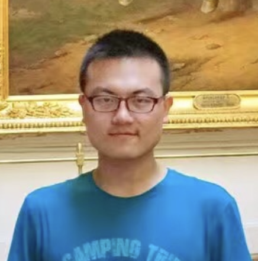

About

I am a Ph.D. student in Information Technology and Electrical
Engineering at ETH Zürich, working in the
Integrated Devices, Electronics, and Systems (IDEAS) Group
under the supervision of Prof. Dr. Hua Wang.
Prior to my PhD, I obtained my M.Sc. in Biomedical Engineering at ETH Zurich,
a B.Eng. in Microelectronics from Xi’an Jiaotong University, and was a visiting
research intern at the Department of Physics at McGill University.
Feel free to reach out for any questions or collaboration opportunities.
Research
I am mainly interested in the following three areas:-
CMOS-Biology Interfaces
ISSCC (2026)BioCAS (2024)
Development of scalable sensing and actuation interfaces on integrated circuit platforms for applications in life sciences and biotechnology, with a particular focus on 3D bio-CMOS interfaces. -
Analog-/Mixed-Signal Integrated Circuits
VLSI (2024)ESSERC (2024)
Development of precision analog, mixed-signal integrated circuits for large-scale sensing and actuation array, with a particular focus on electrochemical analog front-end circuits. -
Machine Learning at Edge
DATE (2022)
Improving data and energy efficiency through analog in-sensor computing and/or digital hardware acceleration.
Publications
Journal Papers- [1] Marco Saif, Adam Y. Wang, Shao-Wei Lo, Fuze Jiang, Zhikai Huang, Jiachen Wang, Hangxing Liu, Chih-Jen Shih, Thomas Burger, Hua Wang, "A MEMS-Free 4096-Pixel CMOS E-Nose Array With MOF-Based Molecular Selectivity, In-Pixel Thermal Regeneration, and a Compact Single-Coefficient Bandpass Sigma–Delta ADC", IEEE Journal of Solid-State Circuits, vol. 61, no. 9, pp. 4841-4853, Sept. 2026
- [9] Zhikai Huang, Fuze Jiang, Hangxing Liu, Adam Wang, Yuguo Sheng, Marco Saif, Hua Wang, "Shape-Memory Multi-Size Micro-Cage Array on CMOS with Integrated Electrochemical Sensors for Joint Bio-Sample Manipulation and Sensing", 2026 IEEE International Solid-State Circuits Conference (ISSCC 2026)
- [8] Marco Saif, Fuze Jiang, Shao-Wei Lo, Adam Y. Wang, Zhikai Huang, Jiachen Wang, Hangxing Liu, Chih-Jen Shih, Thomas Burger, Hua Wang, "MEMS-Free 4096-Pixel CMOS E-Nose Gas Sensor Array with Molecular-Selective Metal-Organic-Framework Sensing and In-Pixel Thermodynamic Modulation for Fast Sensor Regeneration", 2025 IEEE International Solid-State Circuits Conference (ISSCC 2025)
- [7] Zhikai Huang, Fuze Jiang, Hangxing Liu, Ying Kong, Yuguo Sheng, Adam Wang, Dongwon Lee, Marco Saif, Hua Wang, "A CMOS-Compatible and Actuatable 3D-Microcage Array with Shape-Memory for On-Chip Dynamic Cell Interfacing", 2024 IEEE Biomedical Circuits and Systems Conference (BioCAS 2024)
- [6] Marco Saif, Fuze Jiang, Hangxing Liu, Adam Wang, Zhikai Huang, Yuguo Sheng, Dongwon Lee, Thomas Burger, Hua Wang, "A CMOS Molecular Sensor for Personalized Diagnostics Featuring Enzyme-Free Reading and Encoding of Viral Variants at Single-Nucleotide Resolution", 2024 IEEE European Solid-State Electronics Research Conference (ESSERC 2024)
- [5] Hangxing Liu, Fuze Jiang, Adam Wang, Zhikai Huang, Ying Kong, Marco Saif, Dongwon Lee, Thomas Burger, Jing Wang, Hua Wang, "Highly Sensitive Multimodal CMOS Antifouling Sensor Array with Multi-Use Electrodes for Single-Cell-Level Profiling of Biophysical and Biochemical Parameters", 2024 IEEE Symposium on VLSI Technology and Circuits (VLSI 2024)
- [4] Hangxing Liu, Fuze Jiang, Ying Kong, Dongwon Lee, Yuguo Sheng, Adam Wang, Zhikai Huang, Marco Saif, Thomas Burger, Jing Wang, Hua Wang, "A Subcellular-Resolution Multimodal CMOS Biosensor Array with 16K Ion-Selective Pixels for Real-Time Monitoring Potassium Dynamics", 2024 IEEE Symposium on VLSI Technology and Circuits (VLSI 2024)
- [3] Dongwon Lee, Kyung-Sik Choi, Fuze Jiang, Hangxing Liu, Doohwan Jung, Ying Kong, Marco Saif, Zhikai Huang, Jing Wang, Hua Wang, "Fully Integrated CMOS Ferrofluidic Biomolecular Processing Platform with On-Chip Droplet-Based Manipulation, Multiplexing and Sensing", 2024 IEEE International Solid-State Circuits Conference (ISSCC 2024)
- [2] Hangxing Liu, Fuze Jiang, Dongwon Lee, Yuguo Sheng, Adam Wang, Marco Saif, Ying Kong, Zhikai Huang, Thomas Burger, Jing Wang, Hua Wang, "A 256-Channel In-Pixel Electrochemical Platform in CMOS for Rapid Isothermal Genetic Amplification and Screening", 2023 IEEE 49th European Solid-State Circuits Conference (ESSCIRC 2023)
- [1] Alfio Di Mauro, Arpan Suravi Prasad, Zhikai Huang, Matteo Spallanzani, Francesco Conti, Luca Benini, "SNE: An Energy-Proportional Digital Accelerator for Sparse Event-Based Convolutions", 2022 Design, Automation & Test in Europe Conference & Exhibition (DATE 2022)
- [2] Zhikai Huang, "A Continuous-Time Input Pipelined SAR ADC with Loop-Embedded Predictive Offset Generation", 2022 Master of Science in Biomedical Engineering Thesis at ETH Zurich
- [1] Zhikai Huang, "A Battery State-of-Charge Estimation ASIC without Current Dectection", 2019 Bachelor of Engineering in Microelectronics Thesis at Xi'an Jiaotong University
Teaching
Lectures- 2026 Fall, Teaching Assistant, 227-0153-00L: CMOS Electronics for Biological and Molecular Sensing (Master Course), ETH Zurich.
- 2025 Fall, Teaching Assistant, 227-0153-00L: CMOS Electronics for Biological and Molecular Sensing (Master Course), ETH Zurich.
- 2024 Fall, Teaching Assistant, 227-0077-10L: Electronic Circuits (Bachelor Course), ETH Zurich.
- 2025 Spring, Noelle Held, "Comparative Study on the Performance of Planar Microelectrodes and 3D Shell Electrodes for Biological Interfacing", Bachelor Thesis at ETH Zurich
- 2025 Spring (co-spuervised with Hangxing Liu), Joel Kiener, Julian Steiner and Mischa Vasylyev, "Cell Recognition with a Custom-Designed CMOS Biosensor Array", Bachelor Group Project at ETH Zurich
Media Coverage
- [2] ETH Zurich, “IEEE Spectrum Features Lab-on-a-Chip Grippers From Prof. Hua Wang’s IDEAS Group,” D-ITET News Channel, Mar. 18, 2026. [Screenshot].
- [1] IEEE Spectrum, “Lab-On-a-Chip Grippers Could Handle Human Cells: Researchers Design Shape-Memory Cages to Grab Cells and Organoids.” by K. Bourzac, Mar. 14, 2026. [Screenshot]


Services
Journal Reviewer- IEEE Journal on Flexible Electronics
- IEEE Biomedical Circuits and Systems (BioCAS) 2026
- IEEE International Symposium on Circuits and Systems (ISCAS) 2027, 2026, 2025
- IEEE BioSensors 2026
Miscellaneous
Hobbies- Outside of research, I enjoy traveling, photography, and practicing Chinese calligraphy. You can find some of my photos in my Personal Album.